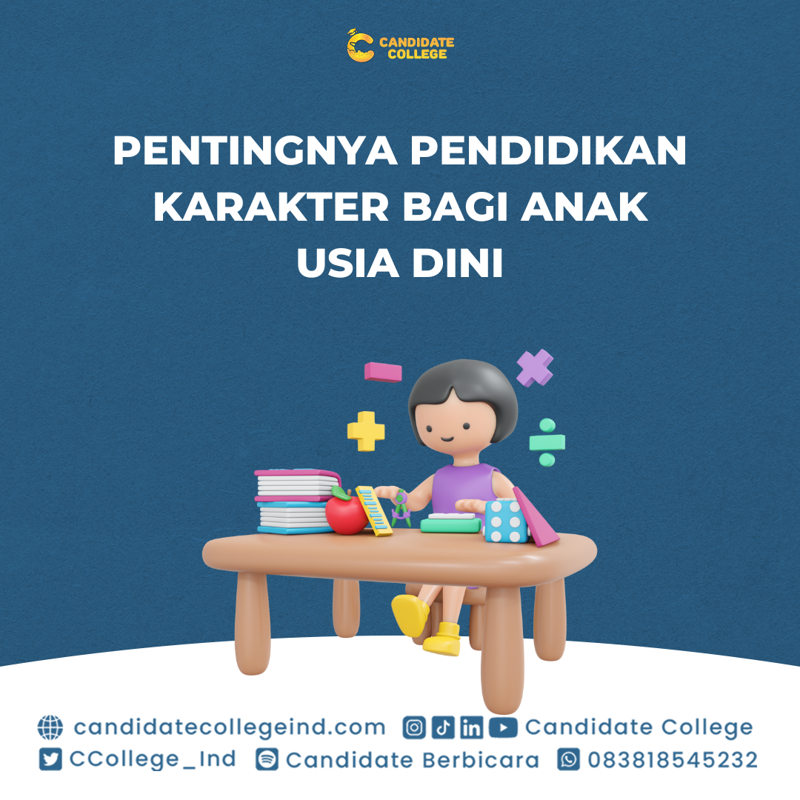
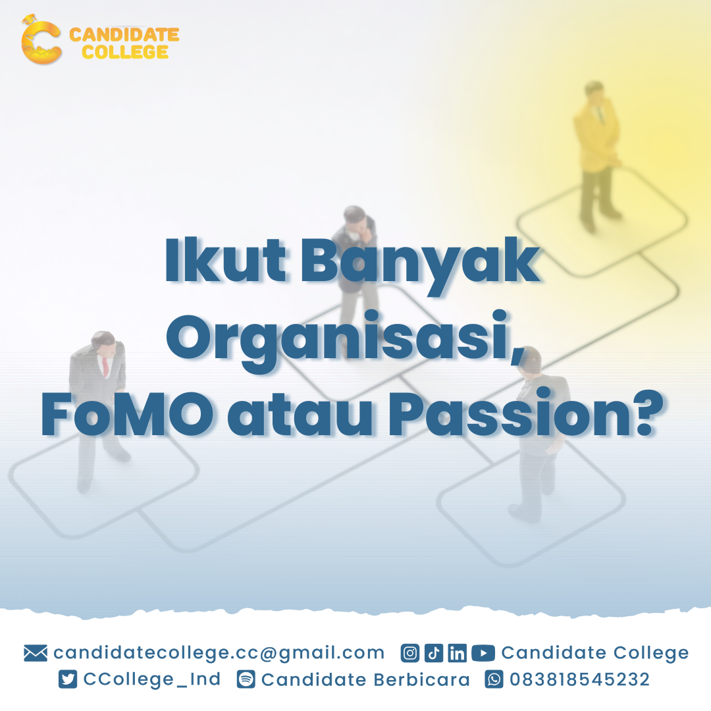

BOOTCAMP LPDP
NEWS
-

15 Mei 2023 by candidate college
Pentingnya Apresiasi Bagi Kemajuan Diri
Halo Candidaters! Apresiasi merupakan tindakan yang sangat penting dan bermanfaat bagi setiap individu untuk....

12 Mei 2023 by candidate college
Negara UK dan US Jadi Negara Incaran Favorit Mahasiswa Indonesia?
Halo, Sobat Candidaters! Banyak mahasiswa Indonesia yang bermimpi untuk belajar di luar negeri dan salah satu tujuan yang paling populer adalah Inggris dan Amerika Serikat.
10 Mei 2023 by candidate college
Pentingnya Bahasa Inggris Sebagai Modal Menghadapi Masa Depan
Halo candidates! Bahasa Inggris adalah bahasa yang paling banyak digunakan di dunia dan juga merupakan bahasa ibu lebih dari 400 juta orang di seluruh dunia. Penggunaan bahasa Inggris di dunia internasional digunakan dalam ...
8 Mei 2023 by candidate college
Krisis Moral di Kalangan Gen Z
Halo candidates! Menurut hasil sensus 2020, gen Z atau generasi Z adalah generasi yang lahir antara tahun 1997 sampai dengan 2012. Saat ini, mereka hidup di dunia yang berhubungan erat dengan kecanggihan teknologi dan global yang mana...
5 Mei 2023 by candidate college
Kenapa Aku Kehilangan Motivasi dalam Mengerjakan Sesuatu yaa ?
Haloo Candidaters!! Siapa nih disini sering merasa kehilangan motivasi dalam mengerjakan sesuatu kegiatan, padahal kegiatan tersebut sudah setengah jalan....

3 Mei 2023 by candidate college
Jadi Mahasiswa : Organisasi, Lomba, Asistensi, Magang. Mana yang Lebih Penting?
Menjadi mahasiswa tidak hanya tentang kuliah dan belajar teori di dalam kelas saja, tetapi juga tentang pengalaman di luar kelas seperti berorganisasi....

1 Mei 2023 by candidate college
Kelola emosi negatif dan strees dengan bijak
Setiap orang pasti memiliki masalahnya masing- masing. Baik itu masalah kecil ataupun besar ....

28 April 2023 by candidate college
Gaya Belajar Seperti Apa Dirimu?
Apakah sobat candidaters pernah merasa kesulitan atau nyaman terhadap suatu gaya belajar tertentu? Gaya belajar tersebut berupa...

19 April 2023 by candidate college
Zona Nyaman Pertahankan atau Tinggalkan ?
Kalian pernah tidak, merasa sulit berkembang dan hidup hanya tentang itu-itu saja, namun rasanya dengan hidup kalian yang begitu dapat merasakan ketenangan, kenyamanan..

17 April 2023 by candidate college
Kegagalan Bukan Akhir dari Segalanya, tetapi Jadikan Sebagai Tempat untuk Belajar
Growth mindset adalah keyakinan bahwa kemampuan dan kualitas pribadi dapat berkembang dan ditingkatkan melalui usaha dan latihan yang terus-menerus.
14 April 2023 by candidate college
Inner Critic : “Baikkah untuk Kita?”
Ketika kita membuat kesalahan atau mengalami kegagalan, seringkali suara dalam diri kita, yang disebut "inner critic," muncul dan mengkritik segala....
12 April 2023 by candidate college
Beberapa hal yang harus diterapkan agar menjadi sukses di masa yang akan mendatang
Nah di dalam ke suksesan pasti ada yang namanya suatu proses yang harus di jalani....

10 April 2023 by candidate college
PENTINGNYA PENDIDIKAN SEX ANAK USIA DINI
Pendidikan sex untuk anak usia dini adalah upaya untuk mengajarkan, meningkatkan kesadaran dan memberikan informasi tentang masalah seksual pada anak...
7 April 2023 by candidate college
Zero Waste Apakah Efektif?
Istilah zero waste atau bebas sampah adalah suatu konsep konsep yang mengajak kita untuk menggunakan produk sekali pakai dengan lebih bijak untuk mengurangi...

5 April 2023 by candidate college
Mahasiswa sebagai Agent Of Change
Saat ini indonesia dihadapkan dengan berbagai masalah dalam segala bidang kehidupan bernegara. Salah satunya adalah pada bidang pendidikan yang mana kualitas pendidikan..

31 Maret 2023 by candidate college
Cara Jadi Orang yang Tahan Banting Be a Highly Resilience Person
Siapa nih yang pengen jadi orang yang tahan banting terhadap segala rintangan yang datang ke kehidupan kita ?

31 Maret 2023 by candidate college
Personal Boundaries Apakah Berpengaruh Terhadap Diri Kita ??
Personal boundaries mengacu pada batasan fisik, emosional, dan mental yang dibuat seseorang untuk....
29 Maret 2023 by candidate college
Should I, or Should I Not?
Ketika kita menghadapi masalah atau kesulitan dalam hidup, seringkali kita merasa sulit untuk mengatasinya sendiri. Kadang-kadang, kita memerlukan bantuan dari orang lain untuk membantu kita melewati masa-masa sulit tersebut...

27 Maret 2023 by candidate college
Inovasi Pendidikan Baru untuk Kaum Milenial
Di zaman reformasi milenial ini, sekarang sudah banyak yang berubah khususnya di bidang pendidikan...
25 Maret 2023 by candidate college
PENTINGNYA PENDIDIKAN KARAKTER BAGI ANAK USIA DINI
Pendidikan karakter adalah pendidikan yanaag mengajarkan nilai dan moral dalam rangka....
22 Maret 2023 by candidate college
Plus Minus Kuliah di Bidang Keuangan
Sekarang generasi muda lagi ngetrendnya membangun startup. Namun yang namanya membangun sebuah startup atau perusahaan itu ...
20 Maret 2023 by candidate college
Catat! Life Hacks Untuk Mahasiswa Semester Akhir Yang Perlu Diketahui
Kesibukan mahasiswa tingkat akhir pasti tidak jauh dari yang namanya skripsi atau tugas akhir. Keseharian yang dilakukan sangat berkaitan erat dengan bimbingin atau revisian skripsi dengan dosen.

17 Maret 2023 by candidate college
Self-Healing Bukan Hanya Sekedar Jalan-Jalan Keliling
Halo, Candidaters! Self-Healing merupakan sebuah proses yang mana bertujuan untuk pemulihan luka batin yang mengganggu mental dan keadaan kita. Dalam bahasa Inggris self-healing berarti penyembuhan diri...
15 Maret 2023 by candidate college
Hacks of Early Applicants : Sosial Media Apa Saja yang Cocok Untuk Memulai Karir Kita?
Halo, Sobat Candidaters! Berkarir di era digital membuat sosial media tidak lagi sekadar media untuk bersosialisasi, tetapi juga menjadi sarana untuk membangun branding pribadi....
13 Maret 2023 by candidate college
Hidup Produktif Dengan Mengelolah Manajemen Waktu
Halo, Sobat Candidaters! Produktif adalah hal yang dilakukan oleh sebagian orang baik bagi pelajar, mahasiswa, maupun....
11 Maret 2023 by candidate college
Cara Mengatasi Burn-out Saat Berpuasa
Halo, Sobat Candidaters! Berpuasa pastinya menahan lapar dan haus, apalagi saat sedang berpuasa masih melakukan kegiatan fisik. Kegiatan fisik atau biasa disebut....

10 Maret 2023 by candidate college
Pentingnya Pendidikan Kewarganegaraan Untuk Memperkuat Nasionalisme Generasi Muda
Di era globalisasi seperti sekarang, dimana informasi menyebar dengan cepat tanpa adanya batasan, diperlukan nasionalisme.....

01 Maret 2023 by candidate college
The Important of Wellness : Inilah 8 Pillar Wellness yang harus diperhatikan bagi Generasi Muda
Wellness atau kesejahteraan secara umum meliputi kesehatan fisik, mental, dan emosional. Dalam era modern yang penuh dengan tekanan dan tantangan...
27 Februari 2023 by candidate college
Kenali Hustle Culture bagi Generasi Muda, Baik atau Tidak ya?
Hustle Culture adalah istilah yang mengacu pada filosofi bekerja keras dan bekerja ekstra keras untuk.....

24 Februari 2023 by candidate college
Lebih Penting Soft Skills atau Hard Skills, yaa ??
Skill merupakan kemampuan yang dimiliki oleh seseorang untuk melakukan suatu kegiatan dengan baik dan efisien.....
22 Februari 2023 by candidate college
Pentingnya Persiapan Karier Sejak Masih Jadi Mahasiswa.
Siapa yang ingin punya karier bersinar? Tentunya semua orang ya. Nah, untuk mencapai hal tersebut perlu sebuah persiapan. Agar mencapai hasil yang maksimal, kamu dapat mempersiapkannya sedini mungkin....

20 Februari 2023 by candidate college
Joki Tugas,Menguntungkan/Merugikan Mahasiswa?
Maraknya jasa joki skripsi di dunia perkuliahan sangatlah pesat, khususnya bagi mahasiswa yang jadwal kegiatannya sangat padat

15 Februari 2023 by candidate college
Pentingnya literasi bagi pendidikan di Indonesia
Seperti yang di kutip oleh UNESCO indonesia berada pada posisi urutan kedua dari bawah soal literasi di dunia,artinya minat baca penduduk indonesia sangat rendah.

13 Februari 2023 by candidate college
Melek Finansial ala Generasi Z : Menabung atau Investasi, Mana yang Lebih Baik?
Generasi Z adalah generasi muda yang lahir antara tahun 1997 dan 2012. Mereka menjadi generasi yang sangat terbuka terhadap teknologi

10 Februari 2023 by candidate college
Cara Survive di Dunia Perkuliahan Mumpung Awal Semester Nihh !!
Perkuliahan merupakan proses belajar dan mengajar yang terjadi di perguruan tinggi atau universitas. Proses ini mencakup interaksi antara tenaga pendidik dan mahasiswa, serta proses pembelajaran yang terstruktur dan berbasis materi...

8 Februari 2023 by candidate college
Tetap Produktif Saat Perkuliahan Hectic? Bisa!
Mahasiswa kerap kali tidak jauh dari bayang-bayang kesibukan. Selain mengerjakan kewajiban untuk belajar dan mengerjakan tugas, banyak juga mahasiswa...

6 Februari 2023 by candidate college
Sedang Kuliah tapi Ingin Traveling? 5 tips and trick yang dapat membantu kamu selama berpergian!
Banyak dari mahasiswa yang merasa jenuh dan bosan dengan banyaknya tugas dan kegiatan di kampus. Biasanya untuk menghilangkan jenuh dan bosan tersebut

3 Februari 2023 by candidate college
Agitasi Dalam Kebebasan Berpendapat Yang Berimplikasi Pada Ekskalasi Pelanggaran HAM Pada Era Transformasi Digital
Media sosial saat ini lebih dominan dimanfaatkan sebagai ajang untuk membangun dan menyebarkan suatu informasi dan karena suatu ruang yang bebas

1 Februari 2023 by candidate college
Generasi Z, Si Paling Open Minded?
Hai Candidaters! Sebelumnya mau nanya nih, kalian pada kelahiran tahun berapa sih? Terus para candidaters tau ga kalian tergolong generasi apa berdasarkan tahun lahir?

31 Januari 2023 by candidate college
Strawberry Generation : Mampukah Kita Menjadi Generasi Pembawa Perubahan?
Apa itu Strawberry Generation? Istilah Strawberry Generation muncul dari negara Taiwan, istilah ini ditujukan pada sebagian generasi baru yang lunak seperti buah strawberry.

30 Januari 2023 by candidate college
New Year New Habits
Menerapkan suatu kebiasaan baru dalam hidup kita bukanlah satu hal yang mudah, terkadang hal ini menjadi suatu tantangan tersendiri bagi kebanyakan orang.

16 November 2022 by candidate college
Self Development, Tips Jitu Untuk Survive di Sekolah dan Kampus!
Hai Candidaters! Kira-kira kamu tahu gak sih apa itu self-development? Penting gak sih untuk bisa melakukan self-development? Dan apa aja sih tips untuk bisa meningkatkannya? Yuk simak penjelasan di bawah ini!

18 November 2022 by candidate college
Time Management for Your Better Campus Life!
Hai Candidaters! Kamu pernah ngga sih merasa kalau 24 jam dalam sehari itu masih kurang? Tapi, kenapa orang-orang masih bisa produktif banget ya dalam memanfaatkan 24 jam itu? Nah, salah satu penyebab utamanya bisa jadi karena Time Management kamu yang belum optimal lho!

21 November 2022 by candidate college
Ingin IP Tiap Semester Tinggi? Lakukan Cara Ini, Dijamin Ampuh!
Hai Candidaters! Sebagai mahasiswa tentunya kamu sering memikirkan bagaimana sih cara Indeks Prestasi (IP) kita tinggi tiap semester? Kok bisa ya orang-orang punya IP yang tinggi? Kenapa IP kita gak semaksimal mereka ya? Padahal ada rahasianya loh, masih sedikit yang tahu, dijamin ampuh. Apa ya rahasianya?

23 November 2022 by candidate college
Perkembangan Inovasi Edukasi di Era Revolusi 5.0
Revolusi industri 5.0 merupakan fenomena yang mengkolaborasikan teknologi cyber dan teknologi otomatisasi. Konsep revolusi Industri 5.0 yang pertama kali dicanangkan oleh Prof. Klaus Schawb, mengatakan bahwa ...

25 November 2022 by candidate college
Quarter Life Crisis: Momentum yang atepat untuk Meroketkan Diri ke Level Kehidupan Selanjutnya
Kesehatan mental dan emosional menjadi kondisi tubuh yang turut diperhatikan oleh banyak orang saat ini. Apalagi bagi kalian yang akan memasuki fase dewasa. Menjadi dewasa merupakan keharusan bagi setiap orang. Tak jarang membuat individu disandingkan dengan tuntutan dan tekanan...

28 November 2022 by candidate college
Menggunakan Sosial Media Sebagai Portofolio Lamaran Kerja, Kenapa Tidak?
Di era digital saat ini, menampilkan portofolio menjadi lebih praktis saat dapat diakses dengan internet (online). Diantara seluruh media online yang ada, salah satu media yang paling mudah dijangkau untuk membangun portofolio adalah...

30 November 2022 by candidate college
Belajar Melakukan Self-Reward untuk Diri Sendiri
Kamu belum tau apa itu self-reward? Nih, Minco kasih tau. self-reward adalah salah satu bentuk penghargaan untuk diri sendiri. Penghargaan tersebut dilakukan untuk mendapatkan kesenangan dan kepuasan karena telah melakukan sebuah tindakan baik...
5 Desember 2022 by candidate college
Ikut Banyak Organisasi, FoMO atau Passion?
Kamu pernah denger omongan orang-orang yang bilang gini ga sih “Ih dia mah ikut banyak organisasi karena fomo kali!”. Nah, kalau pernah, pendapat kamu terhadap orang-orang yang ngomong gitu gimana? Setuju? Kesel? Atau malah merasa tersindir?...

7 Desember 2022 by candidate college
Pentingnya Linkedin Untuk Mahasiswa
Sepertinya aplikasi ‘Linkedin’ sudah terdengar familiar di kalangan mahasiswa kan? Biasanya mahasiswa sedari semester awal sudah memiliki aplikasi tersebut. Terlebih lagi mahasiswa semester menengah hingga akhir yang sedang...

2 Desember 2022 by candidate college
Logika Dasar dan Sastra: Dasar Pendidikan Karakter Bangsa
Dalam perkembangan didalam kehidupan masyarakat Indonesia banyaknya terjadi berbagai perubahan dari berbagai sisi, mulai dari perubahan akibat tatanan baru kehidupan dunia dan perkembangan teknologi informasi serta...

9 Desember 2022 by candidate college
Yuk Simak Tips Bantu Jaga Kesehatan Mental Kamu Sebagai Seorang Mahasiswa!
Halo Candidaters! Tau gak sih, apa itu kesahatan mental?. Menurut Organisasi Kesehatan Dunia (WHO), kesehatan mental adalah keadaan sejahtera di mana setiap individu bisa mewujudkan potensi mereka sendiri. Namun nyatanya ...
12 Desember 2022 by candidate college
Masih jadi deadliner? Ini dia cara mengurangi perilaku Deadliner
Halo Candidaters! Kata “Deadliner” mungkin sudah tidak asing lagi di telinga kita saat ini. Deadliner adalah sebutan bagi seseorang yang cenderung menyelesaikan pekerjaannya saat mendekati waktu tenggat. Di Indonesia sendiri...

14 Desember 2022 by candidate college
Social Loafing: Sebutan Untuk Temanmu yang Malas Kerja Kelompok!
Halo Candidaters! Pernah gak sih kalian punya teman sekelompok yang malas buat kerja bareng gitu? Pernah gak teman sekelompokmu menghilang begitu aja, gak ada kabar, gak kerja sama sekali, tapi tiba-tiba

16 Desember 2022 by candidate college
Multitasking sebagai Gaya Hidup, Yes or No?
Halo Candidaters! Pernah ngga sih kamu ngerjain dua atau lebih tugas di waktu yang bersamaan? Kalau iya, berarti kamu udah familiar dengan istilah multitasking dong. Tapi, sebenarnya multitasking itu bagus atau malah buat kamu jadi kehilangan fokus?

24 Januari 2023 by candidate college
Menjadi Perempuan Yang Tangguh Pada Era Digitalisasi Society 5.0
Halo Candidaters! Perempuan pada saat ini berperan besar, baik sebagai pribadi, istri, ibu, serta warga negara yang berkewajiban mendidik generasi penerus. Perempuan Indonesia juga harus dapat mengambil bagian dalam peningkatan

26 Januari 2023 by candidate college
Time Management for Your Better Campus Life!
Hai Candidaters! Banyak di kalangan mahasiswa yang memiliki julukan atau nama yang menjadi ciri khasnya.

28 Januari 2023 by candidate college
Privillage: Penentu Kesuksesan?
Hai Candidaters! Bicara soal Privilege pasti kalian tidak asing lagi dong pastinya. Yap! Privilege merupakan hak istimewa yang dimiliki sekelompok orang tertentu.